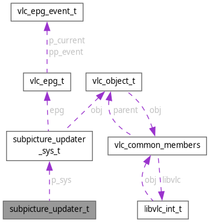

subpicture_updater_t Struct Reference
#include <vlc_subpicture.h>
Collaboration diagram for subpicture_updater_t:

Data Fields | |
| int(* | pf_validate )(subpicture_t *, bool has_src_changed, const video_format_t *p_fmt_src, bool has_dst_changed, const video_format_t *p_fmt_dst, mtime_t) |
| Optional pre update callback, usually useful on video format change. | |
| void(* | pf_update )(subpicture_t *, const video_format_t *p_fmt_src, const video_format_t *p_fmt_dst, mtime_t) |
| Mandatory callback called after pf_validate and doing the main job of creating the subpicture regions for the current video_format. | |
| void(* | pf_destroy )(subpicture_t *) |
| Optional callback for subpicture private data cleanup. | |
| subpicture_updater_sys_t * | p_sys |
Field Documentation
◆ p_sys
| subpicture_updater_sys_t* subpicture_updater_t::p_sys |
Referenced by OSDEpgDestroy(), OSDEpgUpdate(), OSDTextDestroy(), OSDTextUpdate(), OSDWidgetDestroy(), OSDWidgetUpdate(), and subpicture_New().
◆ pf_destroy
| void(* subpicture_updater_t::pf_destroy) (subpicture_t *) |
Optional callback for subpicture private data cleanup.
Referenced by subpicture_Delete(), and subpicture_New().
◆ pf_update
| void(* subpicture_updater_t::pf_update) (subpicture_t *, const video_format_t *p_fmt_src, const video_format_t *p_fmt_dst, mtime_t) |
Mandatory callback called after pf_validate and doing the main job of creating the subpicture regions for the current video_format.
Referenced by subpicture_New(), and subpicture_Update().
◆ pf_validate
| int(* subpicture_updater_t::pf_validate) (subpicture_t *, bool has_src_changed, const video_format_t *p_fmt_src, bool has_dst_changed, const video_format_t *p_fmt_dst, mtime_t) |
Optional pre update callback, usually useful on video format change.
Will skip pf_update on VLC_SUCCESS, or will delete every region before the call to pf_update
Referenced by OSDWidget(), subpicture_New(), subpicture_Update(), vout_OSDEpg(), and vout_OSDText().
The documentation for this struct was generated from the following file:
- include/vlc_subpicture.h
Generated by